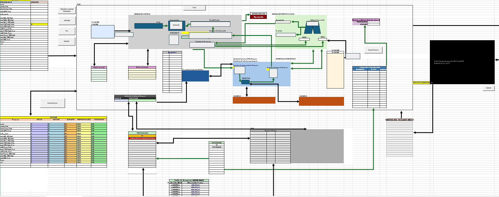
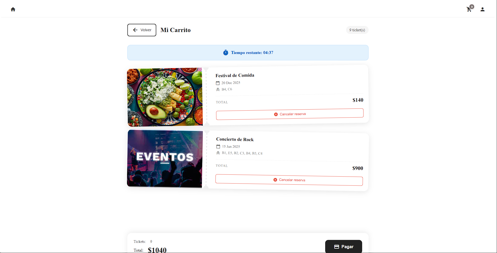
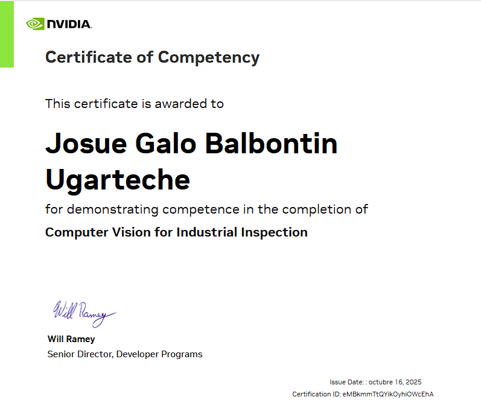
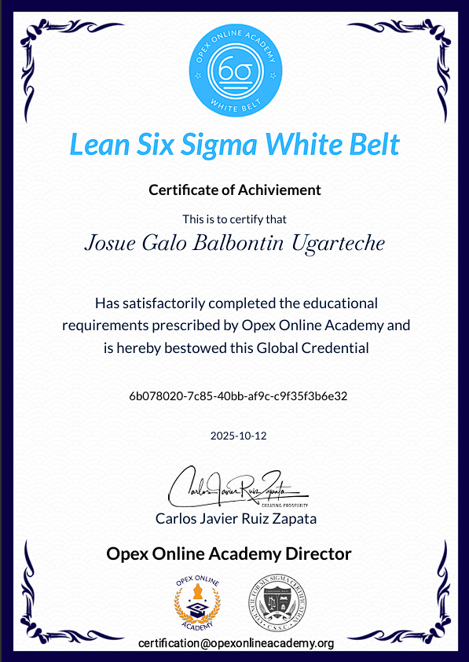
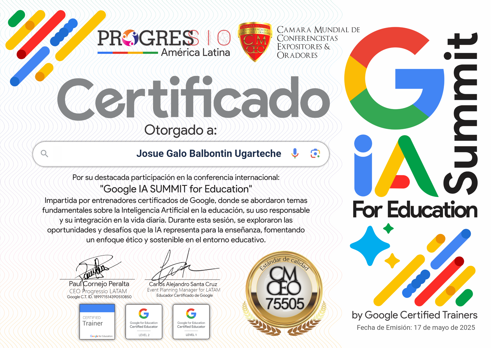
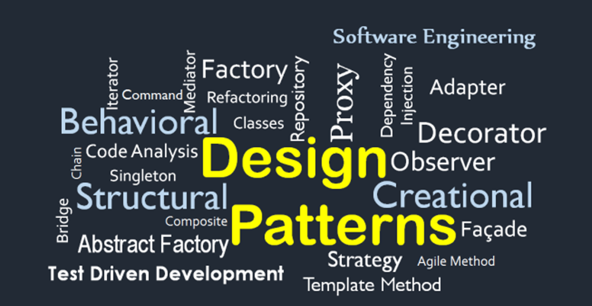
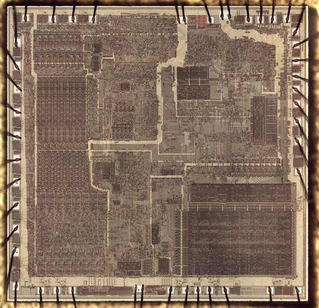

Ingeniero en Software
Josue Balbontin
Desarollador Full Stack


Estudiante de Ingeniería de Software en la UCB con enfoque en desarrollo Backend (Spring Boot) y Frontend (Angular). Con bases en C++ y C#, me motiva entender cómo funcionan las cosas desde la base. Fuera del código, soy curioso en temas variados, desde matemáticas hasta divulgación científica, y disfruto de los videojuegos.
Aplicación de gestión de flota de buses desarrollada en Python con arquitectura cliente-servidor. Implementa funcionalidades de reserva de pasajes, gestión administrativa completa (usuarios, buses, choferes, rutas), sistema de facturación con descuentos, y reportes de auditoría. El proyecto aplica buenas prácticas de bases de datos incluyendo indexación optimizada, triggers de auditoría, y gestión transaccional. Interfaz dual para administradores (CRUD completo) y clientes (reservas, historial, pagos).

Simulador de Arquitectura x86 desarrollado en Microsoft Excel y VBA. Implementa una arquitectura Von Neumann con pipeline de 5 etapas (IF, ID, EX, MEM, WB), detección de hazards y ejecución superpuesta. Simula una jerarquía de memoria completa (Registros, Caché multinivel con política LRU, RAM y Memoria Virtual) y soporta un conjunto de instrucciones x86-64 en sintaxis AT&T. Incluye un sistema de I/O gestionado por interrupciones y visualización en tiempo real del flujo de datos y estados del procesador.
Sistema integral de gestión de eventos y venta de entradas desarrollado con Java (Spring Boot) y Angular. Arquitectura N-Capas diseñada bajo principios SOLID, implementando patrones de diseño avanzados como Observer para el manejo de concurrencia en reservas temporales (bloqueo de asientos) , State para el ciclo de vida del ticket y Template Method para la estandarización de repositorios. Incluye validación de acceso mediante códigos QR, facturación dinámica y reportes de ventas en tiempo real.

Implementación de pipelines de visión por computadora para la inspección visual automatizada, aplicando técnicas de Transfer Learning para mejorar la precisión en la identificación de fallas de manufactura.


Comprensión de los fundamentos de la metodología Lean Six Sigma y el marco DMAIC para la identificación de desperdicios, variabilidad y mejora de procesos operativos.
Participación en la conferencia internacional sobre la integración de la Inteligencia Artificial en entornos educativos, abordando el uso responsable, los desafíos éticos y estrategias sostenibles bajo la guía de Google Certified Trainers.

Artículo de investigación que analiza la integración de la Inteligencia Artificial en el sector salud mediante un enfoque metodológico mixto. Explora las implicaciones de esta tecnología desde una perspectiva tridimensional: tecnológica, legal y ética. El estudio evalúa el impacto de los algoritmos en el entorno clínico, los desafíos regulatorios frente a la privacidad de datos de los pacientes y propone lineamientos para una adopción responsable, equitativa y segura de la IA en la medicina.

Análisis sobre la aplicación de principios de Arquitectura Limpia en sistemas transaccionales críticos. A través del diseño de un motor de reservas, exploro cómo la implementación estricta de SOLID y patrones como Observer y State eliminan la deuda técnica en el manejo de concurrencia. El artículo discute la importancia de desacoplar la lógica de negocio de la infraestructura, permitiendo construir un backend en Spring Boot mantenible, testeable y escalable frente a reglas de negocio complejas como el bloqueo temporal de recursos.

Desmitificando el procesador: una inmersión técnica en la emulación del ciclo de instrucción y la arquitectura Von Neumann. Este post detalla los desafíos de simular un pipeline de 5 etapas (Fetch, Decode, Execute, Memory, WriteBack) y la resolución de conflictos de datos (hazards) en tiempo real. Se reflexiona sobre cómo comprender la jerarquía de memoria y el manejo de registros es crucial para cualquier ingeniero de software que busque escribir código optimizado, eficiente y consciente del hardware subyacente.